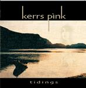

| Artist: | Kerrs Pink |
| Title: | Tidings |
| Label: | Musea FGBG 4451 |
| Length(s): | 58 minutes |
| Year(s) of release: | 2002 |
| Month of review: | [01/2003] |
| 1) | Hour Glass | 5.32 |
| 2) | Tidings From Some Distant Shore | 8.30 |
| 3) | Shooting Star | 9.40 |
| 4) | Yumi Yeda | 10.15 |
| 5) | Moments In Life | 8.37 |
| 6) | Mystic Dream | 9.46 |
| 7) | Le Sable S'est Ecoule | 5.38 |
Tidings From Some Distant Shore lives up to its name, being a somewhat Keltic influenced track, that would fit well enough with the workings of Mostly Autumn. Good one.
Shooting Star has a bit of a lazy start, with softly gliding vocals and dito accompaniment. with a a short guitar solo this laziness briefly goes. The track, however, continues lazily enough, with some hints of Brave/Afraid Of Sunlight era Marillion in the guitar playing. Not quite innovative, but crafted well enough to drag one across the line. With ease.
Yumi Yeda has less vocal fluency than its predecessors do, but remains in the Nordic Keltic areas. Not until well into the track does it start to flow really well. Still, the track's good enough to tie one over into the next.
Moments In Life opens with gently flowing guitars en dito vocals. This leads onto a happy feel good ditty wedged in between. I'm not quite sure what the idea behind this was, but I know I could have done without it. Most of the track is nice enough, though.
Mystic Dream opens up a bit more strength, with hefty guitars and pushing bass. The vocals are strong as ever.
Le sable s'est Ecoule is something of an outro, returning some themes from the album, blending them into a whole.